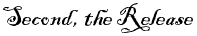

This Indenture made the twenty fifth day of May in the year of our Lord one thousand seven hundred
and sixty four between of the County of Prince William and Colony of Virginia of the one part and
Edward Smoot of Charles County in the Province of Maryland of the other part. Witnesseth that the
said William Mitchell for and in consideration of the sum of five shillings current money of Virginia
to him in hand paid by the said Edward Smoot at or before the sealing and delivery of these presents
the receipt whereof is hereby acknowledged hath granted, bargained and sold and by these presents
doth grant, bargain and sell unto the said Edward Smoot, his heirs etc. a certain tract of land with
appurtenances containing one hundred and fifty three acres situate, lying and being in the County of
Prince William aforesaid, being a part of three hundred acres of land purchased by Luke Cannon of
Thomas Young, and conveyed to the said Thomas Young by George Pemberton, and to the said Pemberton
by Charles Snead to whom the said land descended as heir at law by the several deeds of conveyance
relation being thereunto had may more fully appear, which one hundred and fifty three acres of land
is bounded as followeth Beginning at A, a small white oak about the middle of a marsh on the lower
side of Powell’s Creek, being the corner between the said land and Darby Gallahue’s,
extending from thence SW in the woods by an old line of marked trees one hundred and sixty poles to
B, two small oak saplings and a pine, thence N 47° W to C by a line of marked trees to the
land of George Bigby’s one hundred and fifty one poles, thence with the said Bigby’s
line to D, another marsh on the creek side one hundred and forty four poles, thence with the several
meanders down the said creek S 68° E forty six poles, S 47° E eighteen poles, S 20°
W 16 poles, S 87° E forty three poles, S 42° E twelve poles, S 20° E 11 poles,
S 43° E twelve poles, S 17° E twenty four poles to the Beginning. Together with all
houses, buildings, orchards, ways, waters, watercourses, profits, commodities, hereditaments, and
appurtenances whatsoever to the said premises hereby granted or any part thereof belonging or in
anywise appertaining, and the reversion and reversions, remainder and remainders, rents, issues and
profits thereof. To have and to hold the said tract or parcel of land and all and singular other the
premises hereby granted with the appurtenances unto the said Edward Smoot, executors, administrators
and assigns from the day before the sale hereof for and during the full term and time of one whole year
from thence next ensuing fully to be compleat and ended , yielding and paying therefore the rent of one
peppercorn on Lady Day
‡ next, if the same shall be lawfully demanded, to the intent and purpose that by
virtue of these presents and of the statute for transferring uses into possession, the said Edward Smoot
may be in actual possession of the premises and be thereby enabled to accept and take a grant and release
of the reversion and inheritance thereof to him and his heirs, In witness whereof the said William Mitchell
hath hereunto set his hand and seale the day and year first above written.
William Mitchell
Sealed and delivered in presence of
Foushee Tebbs
John Chambers
Dan
l Payne
Ignatius Mitchell
At a court continued and held for Prince William County the 5
th of June 1764.
This lease from William Mitchell to Edward Smoot was proved by the oaths of Foushee Tebbs, Daniel Payne and John Chambers, three of the witnesses hereto, to be the act and deed of the said William, and the same was thereupon admitted to record.
Test
John Graham C.C.

Mitchell to Smoot - Release
† |
This Indenture made the twenty sixth day of May in the year of our Lord one thousand seven hundred and sixty four between William Mitchell of the County of Prince William in the Colony of Virginia of the one part and Edward Smoot of Charles County in the Province of Maryland of the other part. Witnesseth that for and in consideration of the sum of fifty pounds current money of Virginia to the said William Mitchell in hand paid by the said Edward Smoot at or before the sealing and delivery of these presents the receipt whereof he doth hereby acknowledge and thereof doth release, acquit and discharge the said Edward Smoot, his heirs, executors and administrators by these presents; He the said William Mitchell hath granted, bargained, sold, aliened, released and confirmed and by these presents doth grant, bargain, sell, alien, release and confirm unto the said Edward Smoot (in his actual possession now being by virtue of a bargain and sale to him thereof made by the said William Mitchell for one whole year by indenture bearing date the day next before the day of the date of these presents and by the force of the statute for transferring uses into possession) and his heirs and assigns forever, a certain tract of land with the appurtenances containing one hundred and fifty three acres situate, lying and being in the County of Prince William aforesaid, being part of three hundred acres purchased by Luke Cannon from Thomas Young, and conveyed to the said Thomas Young by George Pemberton, and to the said Pemberton by Charles Snead, to whom the said land descended as heir at law as by the several deeds of conveyance relation being thereunto had may more fully appear, which said one hundred and fifty three acres of land is bounded as followeth Beginning at A, a small white oak about the middle of a marsh on the lower side of Powell’s Creek, being the corner between the said land and Darby Gallahue’s, extending from thence SW in the woods by an old line of marked trees one hundred and sixty poles to B, two small oak saplings and one pine, thence N 47° W to C by a line of marked trees to the line of George Bigby’s one hundred and fifty one poles, thence with the said Bigby’s line to D at another marsh on the said creek side one hundred and forty four poles, thence with the several meanders down the said creek S 68° E forty six poles, S 47°E eighteen poles, S 20° W sixteen poles, S 87° E forty three poles, S 42° E twelve poles, S 20 E eleven poles, S 45° E twelve poles, S 17° E twenty four poles to the Beginning. Together with all houses, buildings, orchards, ways, waters, watercourses, profits, commodities, hereditaments and appurtenances whatsoever to the said premises hereby granted, or any part thereof belonging or in anywise appertaining; And the reversion and reversions, remainder and remainders, rents, issues and profits thereof and also all the estate, right, title, interest, trust, property, claim and demand whatsoever of him the said William Mitchell of, in and to the said premises, and all deeds, evidences and writings touching on or in anywise concerning the same. To have and to hold the said tract or parcel of land and all and singular other the premises hereby granted and released and every part and parcel thereof with their and every of their appurtenances unto the said Edward Smoot, his heirs and assigns forever, to the only proper use and behoof of him the said Edward Smoot and of his heirs and assigns forever. And the said William Mitchell for himself, his heirs, executors and administrators doth covenant, promise and grant to and with the said Edward Smoot, his heirs and assigns by these presents that the said William Mitchell now at the time of sealing and delivering of these presents is seized of a good, sure, perfect and indefeasible estate of inheritance in fee simple of and in the premises hereby granted and released and that he hath good power and lawful and absolute authority to grant and convey the same to the said Edward Smoot in manner and form aforesaid, and that the said premises now are and so forever hereafter shall remain and be free and clear of and from all former and other gifts, grants, bargains, sales, dower right and title of dower, judgment, executions, titles, troubles, charges and encumbrances whatsoever made, done, committed or suffered by the said William Mitchell or any other person or persons whatsoever (the quitrents hereafter to grow due and payable to our Sovereign Lord the King, his heirs and successors only excepted and foreprized). And lastly that the said William Mitchell for himself and his heirs all and singular the said premises hereby granted and released with the appurtenances unto the said Edward Smoot, his heirs and assigns against him the said William Mitchell and his heirs and all and every other person and persons whatsoever shall and will warrant and forever defend by these presents. In witness whereof the said William Mitchell hath hereunto set his hand and seal the day and year first above written.
William Mitchell
Sealed and delivered in presence of
Foushee Tebbs
John Chambers
Dan
l Payne
Ignatius Mitchell
Received May 26
th 1764 of Edward Smoot the sum of fifty pounds current money being the consideration within mentioned.
Witness - As before
William Mitchell
At a court continued and held for Prince William County the 5
th of June 1764.
This Release with the receipt thereon from William Mitchell to Edward Smoot were proved by the oaths of Foushee Tebbs, Daniel Payne, Gent., and John Chambers, three of the witnesses hereto, to be the act and deed of the said William and the same were thereupon admitted to record.
Test John Graham, C. of Court
Notes:
† Deeds of Lease and Release
Deeds of lease and release are often found in Virginia, usually in the Northern Neck and in the older counties. The lease, for a nominal sum, is followed by the release noting the actual sale price. The lease may predate the release by a day, a week, or even a year. The two documents together make up a legal deed and should not be confused with a simple lease to rent land. This is based on the English practice requiring possession of the land before an actual transfer of title could take effect.
Source: Research Notes Number 6, Archives and Information Services Division, Archives Research Services Branch. The Library of Virginia, Richmond, Virginia
‡ Lady Day, also known as Annunciation, is a religious holiday observed on March 25 to commemorate the announcement to the Virgin Mary that she would give birth to the Christ Child.
Dennis M. Smoot